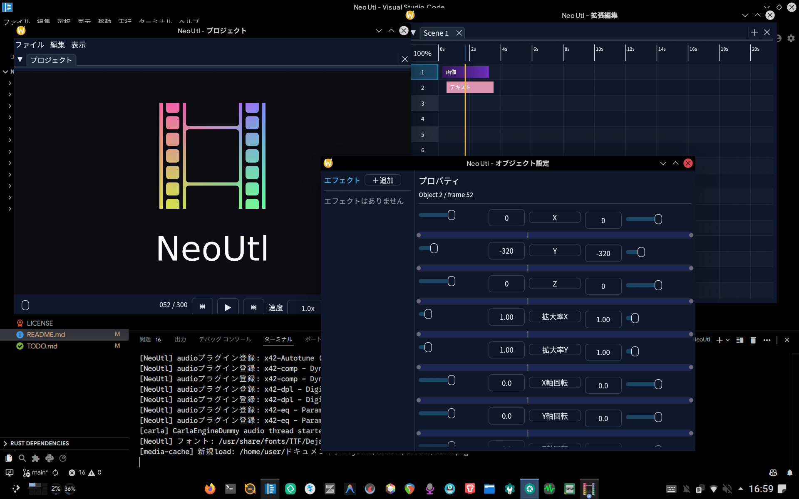

AviQtlのお部屋
★ 開発停止のお知らせ ★
- Qt Quick独自のリソース管理がCompute Shaderと相性が悪く、実装が困難
- 同様に、ECSとの相性が悪く、最適化が困難
- リアルタイム処理においてパフォーマンス上の懸念がある
本プロジェクトによって得られた知見
- QtとFFmpegを使えば、動画編集ソフトの高品質なプロトタイプを高速に実装できる。
- 動的なCompute Shaderの開通が難しい（出来てもボトルネックが大きい）為、GPUゼロコピーを目指すならQt Quickは不適。
- QMLとQSBを用いて、拡張性の高いアーキテクチャを構築できる（少なくともvertとfragは十分に機能する）。
- QMLと他の描画エンジンとの相性は基本的に悪い。
- Qt Quickの制約に縛られながら実装するため、実装は簡単でも肩身が狭い。
AviQtlの今後
- AviQtlが開発を再開する見通しは立っておりません。以下のようなことが起きれば開発を再開するかもしれません。
- Qtにアップデートが来、Compute ShaderをQtシステム内で簡単に扱えるようになる
- Qt 3D（Qt Quick 3Dではありません）が復活する
しかし、このようなことが起きる確率は限りなく低いです。
- AviQtlのソースコードはここで公開され続けます。研究用途でご利用下さい。
- 一番重要なことは、私は、 AviUtlを踏襲し凌駕する動画編集ソフトの実装を諦めたわけではない 、ということです。
- 現在、ImGuiとbgfxの学習を進めております。
- この組み合わせであれば、柔軟な設計が可能なため、Compute Shaderの実装で詰まらないはずです。
- 数ヶ月以内に新たなリポジトリを作成し、AviQtlの無念を晴らす形でAGPLv3+で公開する予定です。
- コンセプトは変わりません。AviUtlを踏襲し凌駕することが私の目標です。
- AviQtlについて質問がある方は、InstagramかXでDMを送って下さい。できる限りお答えします。
AviQtlとは...

AviUtl 1.10 & ExEdit 0.92の操作感を踏襲しつつ、AviUtlを超える性能を持つ動画編集ソフトを開発するプロジェクトです。
主な特徴
- AviUtlに酷似した直感的なUI
- GPUを使った高速で強力なエフェクト
- VST3やLV2等の音声エフェクトに対応
- Linux、Windows、macOSに対応
★ インフォメーション ★
- 私 taisho-guy は2026年度受験生になりますから、開発速度が低下します。ご了承下さい。
- 現在AviQtlは開発初期段階です（2026/1/20開発開始）。技術プレビューとしてお楽しみ下さい。
★ ダウンロード ★
- 現在AviQtlはLinux(x86_64)、macOS(ARM64)、Windows(x86_64)をターゲットにしております。
- 最新のパッケージが使えないディストリビューション（Ubuntu等）では正しく動作しない可能性がございます。
- CachyOSでのご利用を推奨しております。
- Linuxの場合、Qt6全般、LuaJIT、Vulkan実装（Mesa等）、FFmpeg、Carlaをインストールします（macOS、Windowsは依存関係を同梱しているため追加のインストールは不要です）。
- お使いのPCに最適なビルドをダウンロードします。
- ダウンロードしたファイルを展開します。
AviQtlに実行権限を付与します。AviQtlを実行します。
Linux環境において、Ubuntu等の保守的なディストリビューションをご利用の方は、DistroboxでArch Linuxコンテナを作成し、その中で実行することを強く推奨致します。
★ ビルド手順 ★
Linux / macOS / Windowsの各環境でBUILD.pyを利用してビルド可能です。
ビルドターゲットはOSから自動判定されます。通常はpython BUILD.pyのみで実行可能です。
リポジトリをクローンし、必要に応じて仮想環境を作成します。
git clone https://codeberg.org/taisho-guy/AviQtl.git
cd AviQtl
python3 -m venv .venv
python -m pip install --upgrade pip PySide6Linux
distrobox/podmanを使用してビルド環境を分離します。
- 依存関係のインストール:
pacman -S --needed distrobox podman python pyside6 git(Archの場合) - ビルド:
python BUILD.py --arch - 実行:
./build/AviQtl
macOS
Homebrew経由で依存関係を解決し、.appバンドルを作成します。
- 依存関係のインストール:
brew install python pyside git - ビルド:
python BUILD.py --xcode - 実行:
open ./build/AviQtl.app
Windows (MSYS2)
- 依存関係のインストール:
pacman -S git mingw-w64-ucrt-x86_64-pyside6 - ビルド:
python BUILD.py --msys2 - 実行:
./build/AviQtl.exe
Windows (MSVC - 非推奨)
環境構築の複雑さから非推奨としています。
- 準備: VS2022 C++ツールセット、公式Qt(MSVC x64版)、vcpkg。
- ビルド:
python BUILD.py --msvc --qt-dir <path> - 実行:
.\build\AviQtl.exe
★ バグ報告・提案・質問 ★
既にあるイシューを確認して下さい。もし、あなたが望む情報がなければイシューを作成して下さい。
★ 貢献 ★
開発への参加を歓迎します！詳しくはCONTRIBUTING.mdをご覧ください。実装はもちろん、ドキュメントの拡充や翻訳などでも貢献できます。
★ Q & A ★
開発のきっかけは？
OSの壁と決定的敗北
私が愛用するCachyOS上でAviUtlを運用しようとして失敗したことがきっかけです。AviUtlのためだけにWindows環境を維持し続けることは私にとって受け入れがたいものでした。
肥大化したエコシステム
理由は違えど、AviUtlを「仕方なく」使い続けている方は少なくないはずです。長年の拡張によって肥大化した「ハウルの動く城」のようなエコシステムは、不満を抱えながらも手放すことができない存在となっています。
プロジェクトの目標とミッション
私は、鹿児島県立甲南高等学校の課題研究において、この現状を打破すべくAviQtlの独自開発を決意しました。
個人的な目標: Domino、VocalShifter、REAPER、AviUtlをはしごすることなく、Linux上のAviQtlのみで音MADを制作すること。
AviQtlのミッション: AviUtlを「仕方なく」使っている方々の最適解になること。
名称の由来は？
AviQtlは、「AviUtl」と「Qt」を組み合わせた造語です。AviUtlの操作感を継承しつつ、QtによるモダンなUIとクロスプラットフォーム対応を実現する設計思想を表しています。
アイコンの由来は？
QtとAviUtlを組み合わせた本プロジェクトのアイデンティティを表現しています。
なぜAviUtlのクローンを開発しているのですか？
AviQtlは「AviUtlの再発明」ではありません。AviUtlを強く意識していますが、その中身は全く異なります。
| 鳥瞰図 | AviQtl | ExEdit0 | ExEdit2 | Beutl | YMM4 |
|---|---|---|---|---|---|
| 基盤 | Qt Quick | Win32 API | Win32 API | SkiaSharp | WPF |
| 処理 | データ志向型並列処理 | シングルスレッド | マルチスレッド | SceneGraph並列描画 | 基本シングルスレッド |
| メモリ | 64bit | 32bit | 64bit | 64bit | 64bit |
| 描画 | Vulkan/Metal/DX12 | GDI | DX11 | OpenGLバックエンド | WPF |
| 音声 | Carla (VST3/LV2等) | 貧弱 | 貧弱 | 貧弱 | 合成音声対応 |
| 拡張 | LuaJIT/C++/QML/GLSL | Lua/C++ | LuaJIT/C++ | C# | EXO |
| OS | Linux/Windows/macOS | Windows | Windows | Windows/macOS/Linux | Windows |
AviQtlはExEdit2も解決できない構造的弱点を根本的に覆します。
1. ECSがもたらす「データ指向」の革命
従来のオブジェクト指向（OOP）的なマルチスレッドでは、各クリップを「オブジェクト」として扱い、メモリ上のあちこちに散らばったデータを読み込むたびにレイテンシが発生します。AviQtlのECSは、データをメモリ上に「隙間なく、連続して」配置し、CPUのキャッシュ効率を極限まで高めます。
2. メモリ管理の「近代化」と「一貫性」
C++23のスマートポインタ（RAII）とアロケータ最適化を採用し、AviUtlのプラグインごとにバラバラだったメモリ管理を一元化。原因不明のクラッシュを構造的に最小化しています。
3. Qt6 / QML による「疎結合なUIアーキテクチャ」
UIスレッドとレンダリング（Vulkan）スレッドを完全に分離。重いレンダリング中でもタイムラインの操作が一切妨げられず、High-DPI環境でもUIがぼやけることはありません。
4. クロスプラットフォーム・コア（OSからの自立）
特定のOSに縛られ続ける制作上のリスクを排除。Linux上で真のパフォーマンスを発揮できるのはもちろん、他OSでもコアを書き換えることなく最大のパフォーマンスを得られます。
AviUtlのプラグインやスクリプトはそのまま使えますか？
いいえ。仕組みが根本から異なるためバイナリレベルでの互換性はありません。互換レイヤーを実装する予定も有りません。しかし、LuaJITを採用しているため、スクリプトの移植性は高く、AviUtl以上に柔軟な拡張システムを備えています。
課題研究が終わった後も開発は続きますか？
はい。このプロジェクトは私の「音MAD制作をLinuxで完結させる」という目標から始まっています。研究期間終了後も、私自身のメインエディタとして、そしてAviUtlの代替を待つ方々のために開発を継続します。
★ 関連リンク ★
AviQtlは、多くの素晴らしいプロジェクトの上に成り立っています。この場を借りて、感謝を申し上げます。
| AviUtl | 非自由 | 本プロジェクトがリスペクトしている、ＫＥＮくん氏開発の動画編集ソフト「AviUtl」の公式サイトです。 |
| Carla | GPLv2+ | VST3やLV2等の音声エフェクトをホストするためのバックエンドとして利用しています。 |
| AviQtl | AGPLv3+ | Codeberg上のメインリポジトリです。開発の最前線であり、ソースコードや最新リリースが公開されています。 |
| FFmpeg | GPLv2+ | 動画・音声のデコード、エンコード、変換を司る、映像処理の要です。 |
| LuaJIT | MIT | 非常に高速なJITコンパイルが可能なLuaエンジンで、エフェクト記述や拡張機能に使用しています。 |
| Qt | GPLv3 | UI/UXの構築にQt QuickおよびQMLを採用し、クロスプラットフォームで軽快な操作感を実現しています。 |
| Remix Icon | Remix Icon License v1.0 | AviQtl内のシンボルアイコンに採用されています。 |
| Vulkan | Apache 2.0 | GPUを最大限に引き出し、リアルタイムでの高度な描画とエフェクト処理を支える基盤APIです。 |
| Zrythm | AGPLv3 | 音声プラグイン（Carla等）の対応において、実装を参考にしました。 |
★ 使用上の注意 ★
AviQtlはGNU Affero General Public Licenseに基づいて公開されている自由ソフトウェアです。